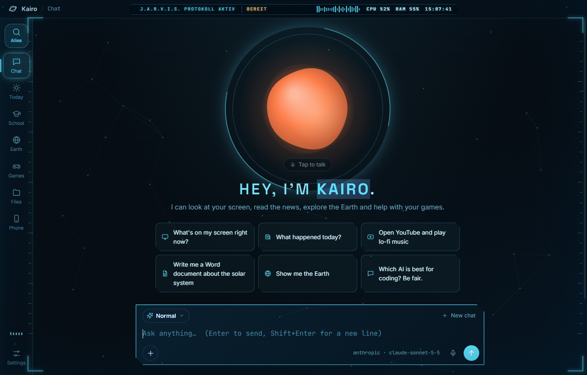
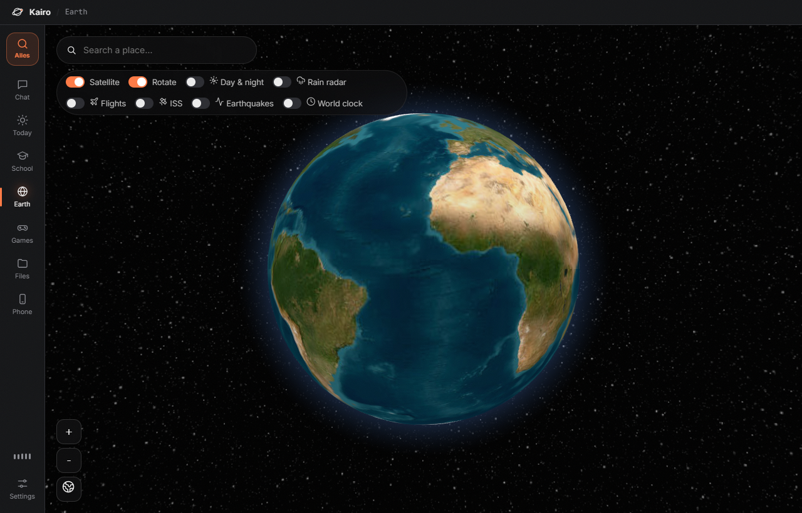
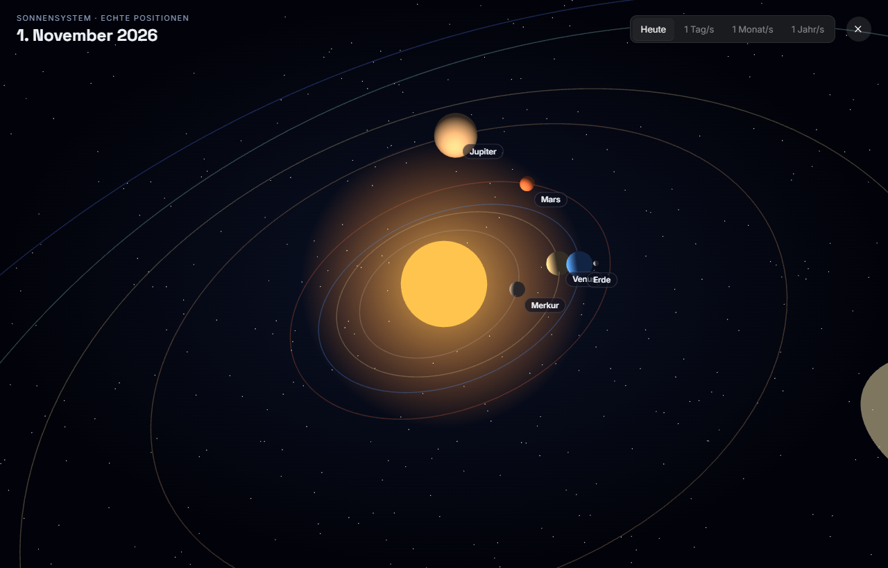

Your AI assistant
that actually does things.
Just talk to Kairo. It builds apps and websites, researches with real sources, helps with school, flies over a 3D Earth and turns your PC into an Iron Man HUD.

Everything in one app
Works with Gemini (free), Claude, ChatGPT or a local AI.
Just talk – Kairo answers instantly with a natural voice and gets things done on your PC.
The whole app and your desktop turn into a holographic Iron Man HUD.
Draw a sketch or describe it – Kairo builds a real, working app.
Reads dozens of sources and writes a report with numbers and citations.
Exam simulator with grades, learning paths, a language tutor and a writing coach.
Describe a game, see a 3D preview, build it in Roblox Studio with one click.
Satellite imagery, live flights, rain radar, world tours and documentaries.
Job applications, CVs and presentations as PDF, Word and PowerPoint.
Big glowing buttons on your phone control your PC.
See Kairo in action
A dark, modern design full of animations.






Ready in 2 minutes
No coding skills needed.
Click “Download Kairo” and open Kairo-Setup.exe.
Follow the installer. Kairo lands on your desktop and in the Start menu and keeps itself up to date.
A short welcome setup shows you how to get a free Gemini key from aistudio.google.com/apikey and checks it for you.
FAQ
Is Kairo really free?
Yes. Kairo itself is free. With a Gemini key from Google you can use the AI for free too (with a daily limit).
What happens to my data?
Settings, keys and reminders stay encrypted on your PC. Your questions only go to the AI you choose.
Does Kairo run in the background?
No. Kairo only runs while its window or the small orb is open.
Which Windows version do I need?
Windows 10 or 11 (64-bit). A microphone for the voice features.
Which languages does Kairo speak?
English, German, Albanian, French, Spanish, Italian and Turkish.